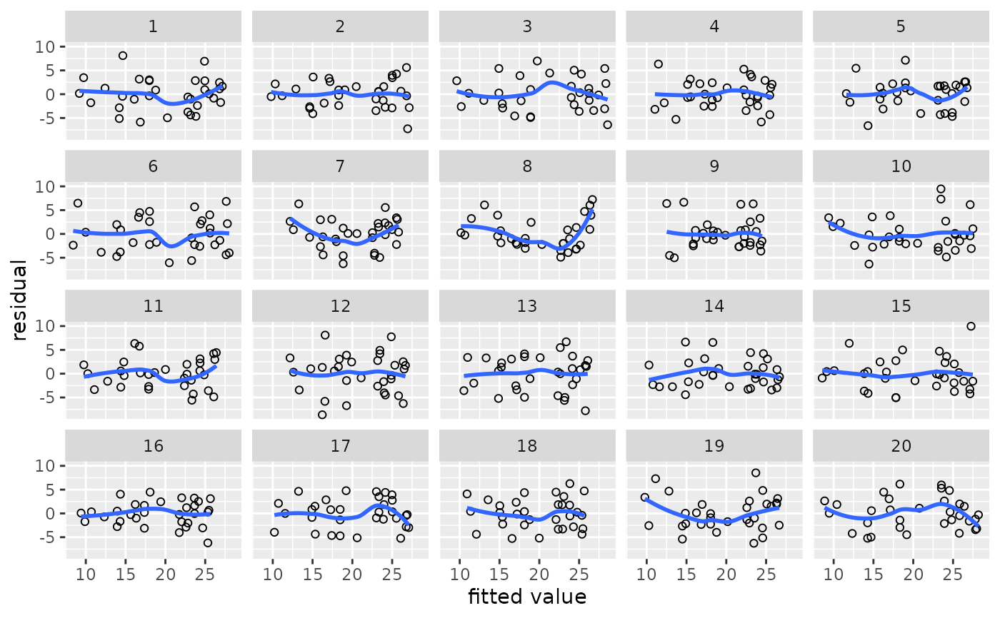
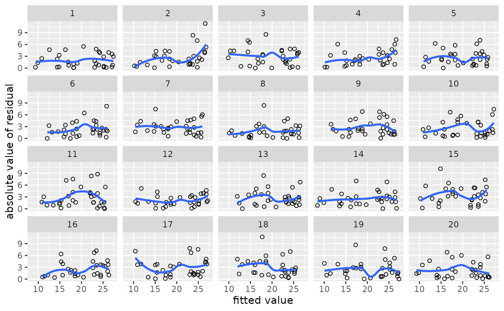
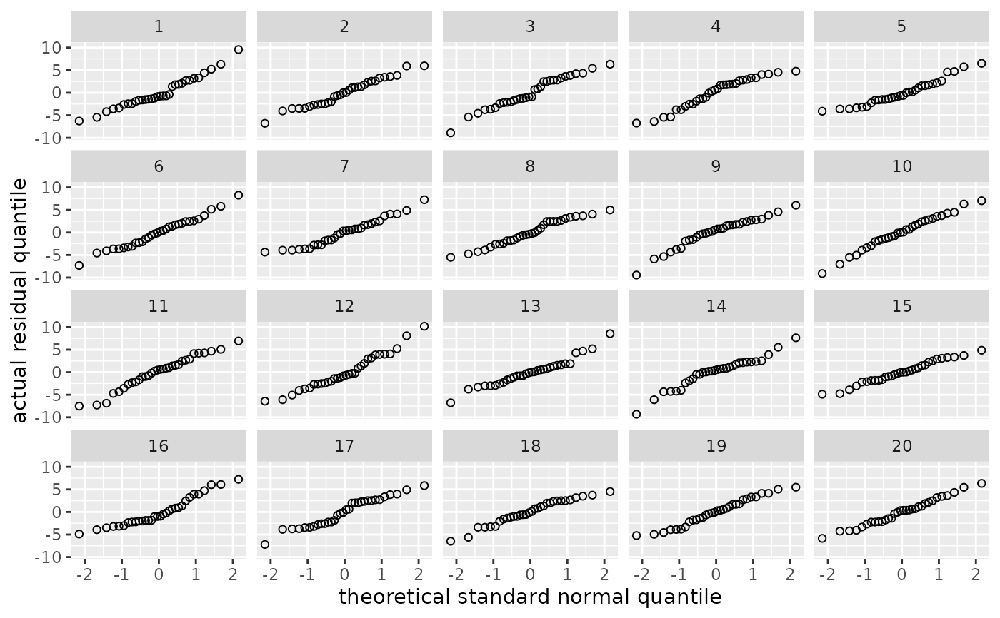
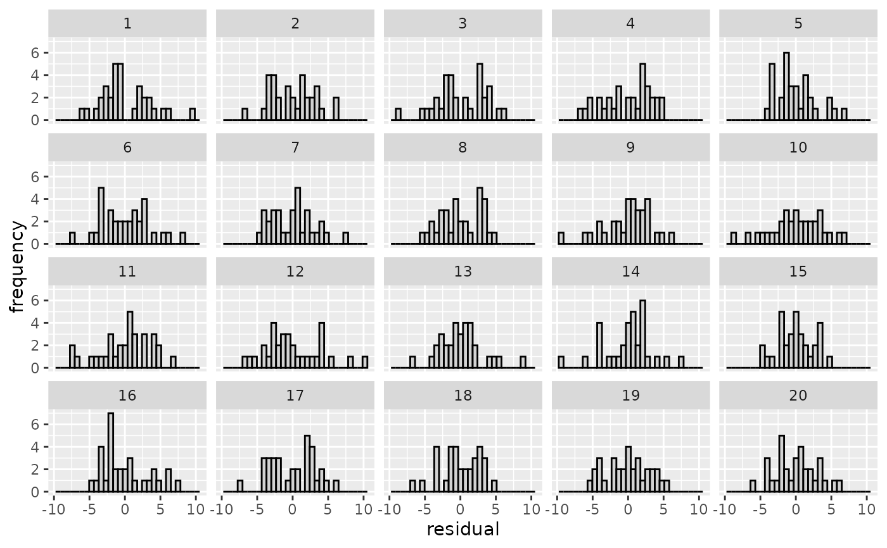
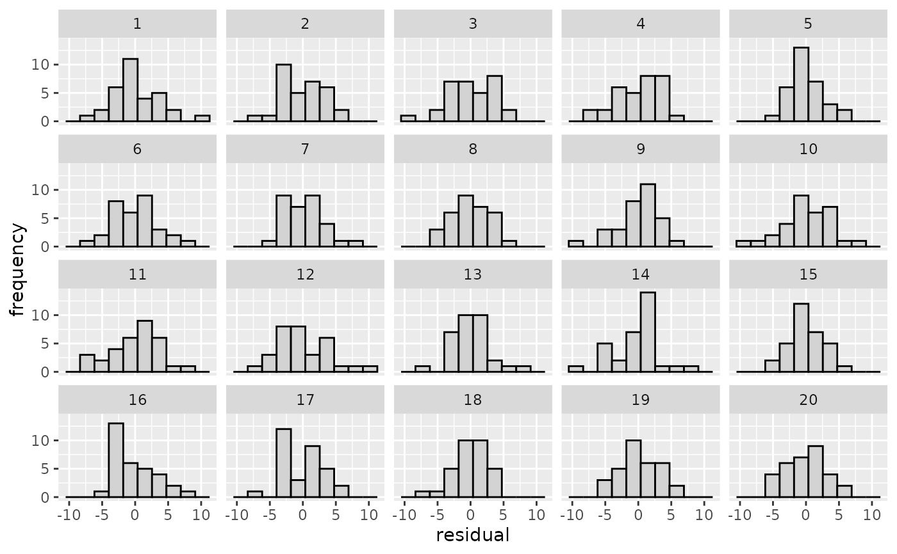
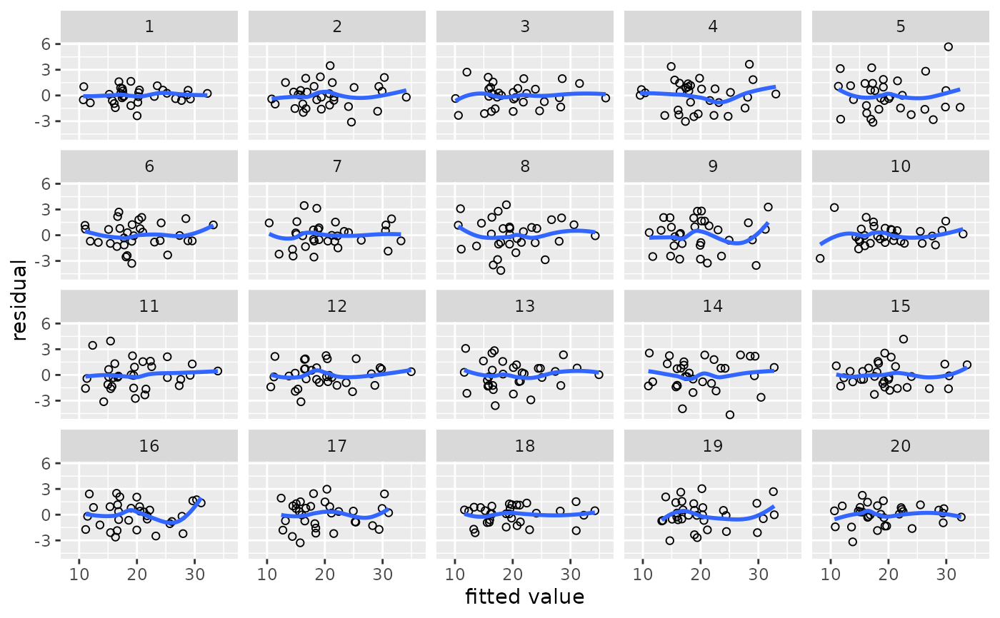
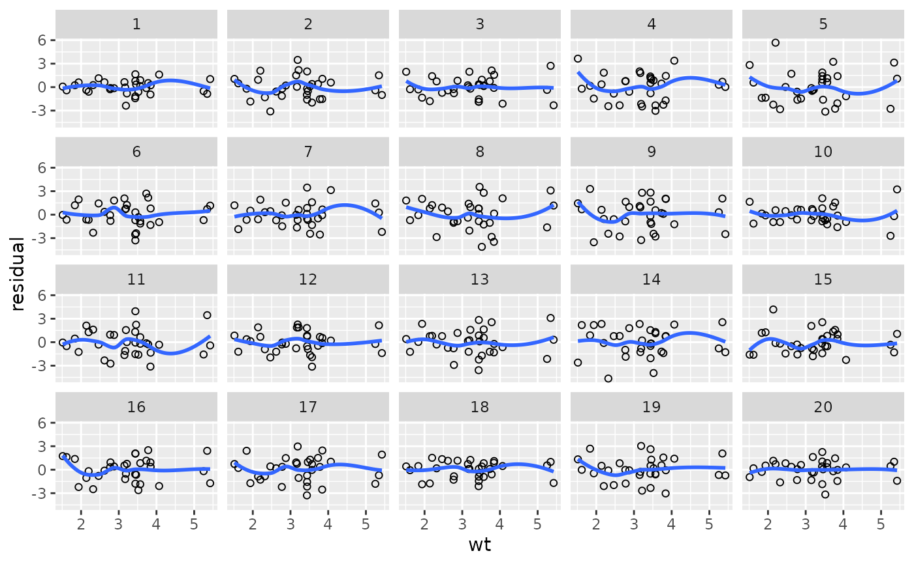
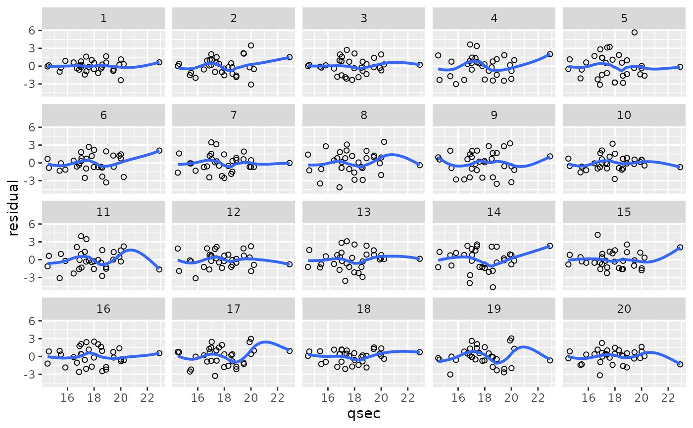

Draw diagnostic parades
diagnostic_plot.RdThese are short-hand functions to quickly draw diagnostic parades.
lin_plot() plots the models' residuals against (by default) their corresponding fitted values.
The residuals can also be plotted against a specific predictor if the predictor
parameter is set.
This function is useful for checking the linearity assumption.
var_plot() plots the models' absolute residuals against (by default)
their corresponding fitted values if it is fed an object generated using parade().
The absolute residuals can also be plotted against a specific predictor if the predictor argument
is set. If it is fed an object generated using parade_summary(),
it plots the sample standard deviation of the residuals per cell.
This function is useful for checking the constant-variance assumption.
norm_qq() and norm_hist() plot normal quantile-quantile plots and histograms of the
models' residuals, respectively. This function is useful for checking the normality assumption.
Usage
lin_plot(parade, predictor = NULL, rank = FALSE)
var_plot(parade, predictor = NULL, rank = FALSE)
norm_qq(parade)
norm_hist(parade, bins = 30)Arguments
- parade
The name of an object generated using
parade(). Forvar_plot(), objects generated usingparade_summary()are also accepted.- predictor
The name of a variable in the parade object against which the residuals should be plotted. If this parameter isn't specified (default), the residuals will be plotted against their respective fitted values.
- rank
Should the values along the x-axis be converted to ranks (
TRUE) or not (FALSE, default)? When used, ties are broken randomly. This may be useful when the raw values are concentrated in certain regions along the x-axis, making it difficult to discern relevant patterns.- bins
How many bins should the histograms contain? Defaults to 30.
Examples
# A simple regression model
m <- lm(mpg ~ disp, data = mtcars)
# Generate parade and check linearity
my_parade <- parade(m)
lin_plot(my_parade)
#> `geom_smooth()` using method = 'loess' and formula = 'y ~ x'

reveal(my_parade)
#> The true data are in position 8.
# Regenerate parade and check constant variance
my_parade <- parade(m)
var_plot(my_parade)
#> `geom_smooth()` using method = 'loess' and formula = 'y ~ x'

reveal(my_parade)
#> The true data are in position 4.
# Regenerate parade and check normality
my_parade <- parade(m)
norm_qq(my_parade)

norm_hist(my_parade)

norm_hist(my_parade, bins = 10)

reveal(my_parade)
#> The true data are in position 16.
# Example with gam
library(mgcv)
#> Loading required package: nlme
#>
#> Attaching package: ‘nlme’
#> The following object is masked from ‘package:dplyr’:
#>
#> collapse
#> This is mgcv 1.9-4. For overview type '?mgcv'.
m.gam <- gam(mpg ~ s(disp) + wt + s(qsec, by = am), data = mtcars)
my_parade <- parade(m.gam)
lin_plot(my_parade)
#> `geom_smooth()` using method = 'loess' and formula = 'y ~ x'

lin_plot(my_parade, predictor = "wt")
#> `geom_smooth()` using method = 'loess' and formula = 'y ~ x'

lin_plot(my_parade, predictor = "qsec")
#> `geom_smooth()` using method = 'loess' and formula = 'y ~ x'
